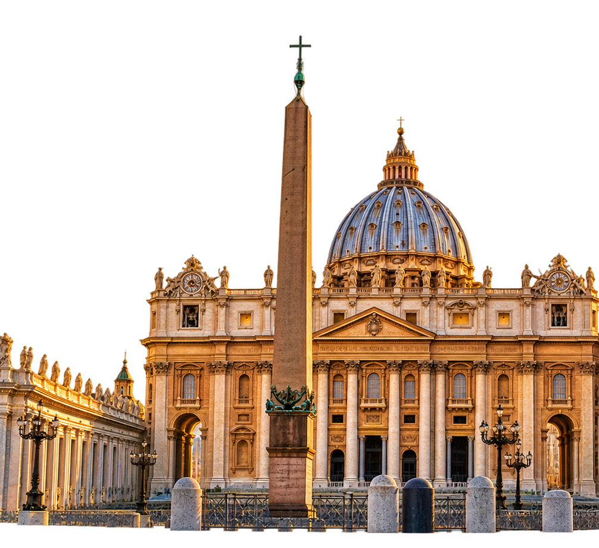
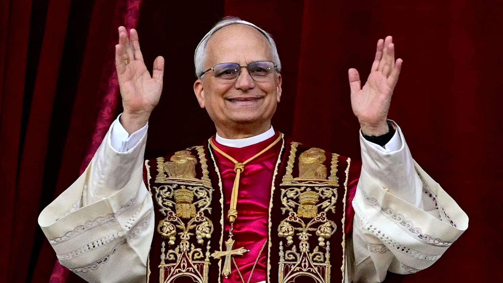

11 NOV 2026
Jornada histórica.
 LUJÁN
LUJÁNEncuentro con
11 DE NOVIEMBRE DE 2026
Una visita histórica para nuestra ciudad.
Días
Horas
Minutos
Segundos
El 11 de noviembre de 2026 nuestra ciudad será sede de una jornada histórica. Miles de personas se reunirán en Luján para compartir un mensaje de fe, unidad y esperanza.
Jornada histórica.
Luján, Buenos Aires.
de todo el país.
Luján, símbolo de fe y hospitalidad, vuelve a ser punto de encuentro para peregrinos de todo el mundo.


Elegido Papa en mayo de 2025. León XIV es el primer pontífice estadounidense de la historia. Su trayectoria está profundamente vinculada con América Latina, especialmente con Perú, donde desarrolló gran parte de su labor pastoral.
Nació en Chicago, EE.UU.
de misión pastoral en Perú.
Elegido 276.º Papa
Miércoles 11 de noviembre
* Horarios sujetos a modificación.
Mantenete informado